300 training images · 20 epochs · 20 test images.
Model Precision Recall Pretrained 83.3% 100.0% Fine-tuned 95.2% 100.0% From scratch 83.3% 25.0%
Precision: Of the predicted plates, how many were correct?Recall: Of the labeled plates, how many were found?
Confidence ≥ 0.25, IoU ≥ 0.50.
PARSeq-Tiny OCR · 277 labeled plate images for training · 20 epochs
OCR model Exact plate accuracy Original OCR 76.5% (13/17) Fine-tuned OCR 76.5% (13/17)
This table tests text recognition alone: both OCR models read the same 17 plate images taken from manually labeled boxes. 3 plates without confirmed text are excluded. The whole plate number must match; case, spaces and punctuation are ignored.
Below, both OCR models read the plate areas found by YOLO. A predicted box may include extra background or cut off characters, so these results can differ from the table. ✓ matches the reference; ✗ differs. Missed plates have no OCR result.
Split All images Test (20)
Images per page 5 10 20 50
Previous Next Page Previous Next Page us_test_001.jpg Test image · Same confidence threshold for all models
Original image Reference: 3421
Pretrained 1 detections · 66.7 ms
#1 · 0.916 Reference 3421
Original OCR 934214 ✗
Fine-tuned OCR 3421 ✓
Fine-tuned 1 detections · 46.4 ms
From scratch 0 detections · 49.8 ms
No detections at this confidence threshold.
us_test_002.jpg Test image · Same confidence threshold for all models
Original image Reference: T
Pretrained 1 detections · 69.3 ms
#1 · 0.878 Reference T
Original OCR MEN ✗
Fine-tuned OCR XIN ✗
Fine-tuned 1 detections · 55.9 ms
From scratch 1 detections · 52.1 ms
#1 · 0.278 Reference No matching plate
Original OCR COMPECTION
Fine-tuned OCR 1
us_test_003.jpg Test image · Same confidence threshold for all models
Original image Reference: Not labeled
Pretrained 1 detections · 87.4 ms
#1 · 0.887 Reference Not labeled
Original OCR OROOO
Fine-tuned OCR 0R00
Fine-tuned 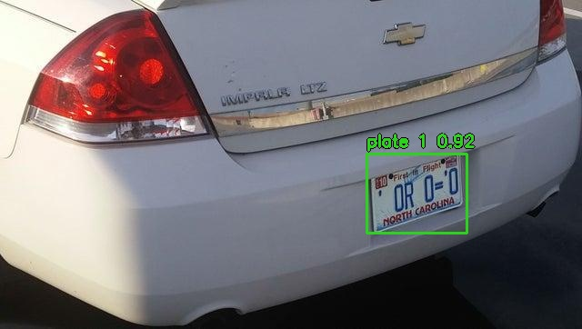
1 detections · 39.6 ms
#1 · 0.919 Reference Not labeled
Original OCR OROO
Fine-tuned OCR ORD0
From scratch 0 detections · 45.5 ms
No detections at this confidence threshold.
us_test_004.jpg Test image · Same confidence threshold for all models
Original image Reference: Not labeled
Pretrained 1 detections · 134.7 ms
#1 · 0.830 Reference Not labeled
Original OCR P055585
Fine-tuned OCR P055585
Fine-tuned 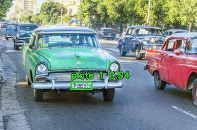
1 detections · 43.4 ms
#1 · 0.940 Reference Not labeled
Original OCR P055585
Fine-tuned OCR P055585
From scratch 0 detections · 63.9 ms
No detections at this confidence threshold.
us_test_005.jpg Test image · Same confidence threshold for all models
Original image Reference: 5FLR236
Pretrained 1 detections · 136.6 ms
#1 · 0.871 Reference 5FLR236
Original OCR 5FLR236 ✓
Fine-tuned OCR 5FLR236 ✓
Fine-tuned 1 detections · 45.1 ms
From scratch 0 detections · 91.1 ms
No detections at this confidence threshold.
us_test_006.jpg Test image · Same confidence threshold for all models
Original image Reference: HYMAIOS
Pretrained 2 detections · 115.9 ms
#1 · 0.897 Reference HYMAIOS
Original OCR LHYMATOS ✗
Fine-tuned OCR HYMAIOS ✓
#2 · 0.415 Reference No matching plate
Original OCR ALLON
Fine-tuned OCR 400
Fine-tuned 1 detections · 70.9 ms
#1 · 0.933 Reference HYMAIOS
Original OCR LHYMALOS ✗
Fine-tuned OCR HYMA10S ✗
From scratch 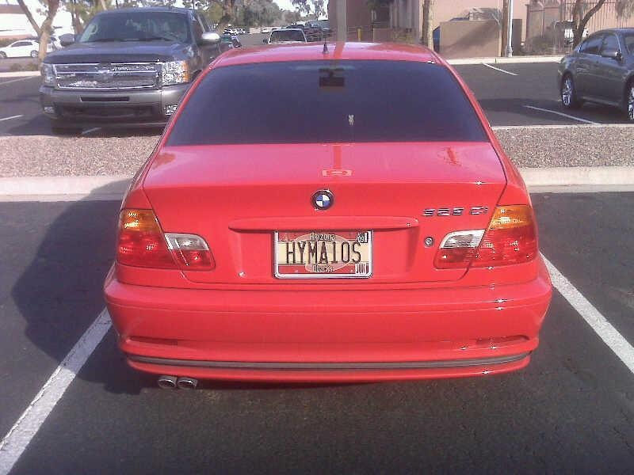
0 detections · 88.3 ms
No detections at this confidence threshold.
us_test_007.jpg Test image · Same confidence threshold for all models
Original image Reference: RZN384
Pretrained 1 detections · 121.8 ms
#1 · 0.850 Reference RZN384
Original OCR RZN384 ✓
Fine-tuned OCR RZN384 ✓
Fine-tuned 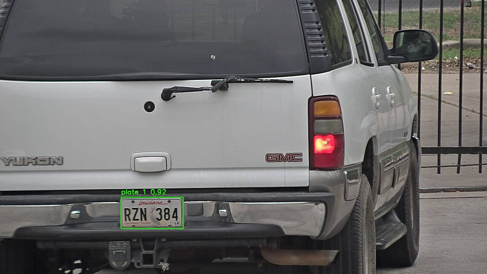
1 detections · 45.1 ms
From scratch 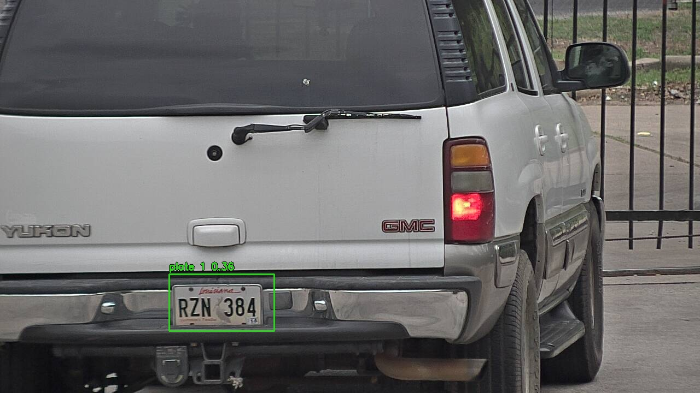
1 detections · 61.4 ms
us_test_008.jpg Test image · Same confidence threshold for all models
Original image Reference: XCJS77
Pretrained 1 detections · 91.6 ms
#1 · 0.957 Reference XCJS77
Original OCR XCJS77 ✓
Fine-tuned OCR XCJ577 ✗
Fine-tuned 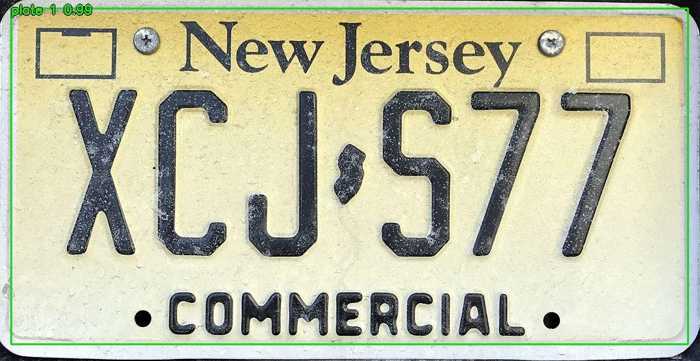
1 detections · 44.1 ms
From scratch 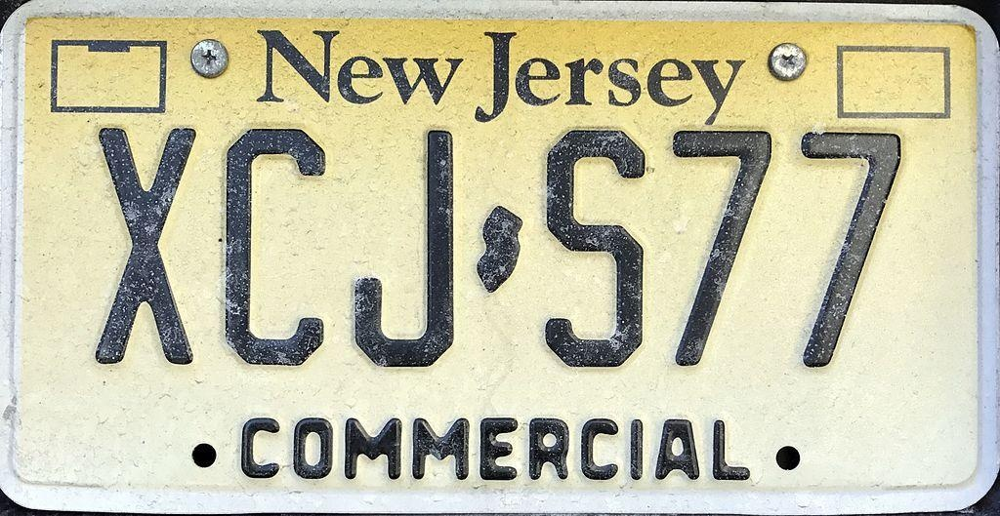
0 detections · 62.8 ms
No detections at this confidence threshold.
us_test_009.jpg Test image · Same confidence threshold for all models
Original image Reference: 1AMW240
Pretrained 1 detections · 110.1 ms
#1 · 0.901 Reference 1AMW240
Original OCR 1AMM240 ✗
Fine-tuned OCR 1AMW240 ✓
Fine-tuned 1 detections · 43.4 ms
#1 · 0.915 Reference 1AMW240
Original OCR 1AMW240 ✓
Fine-tuned OCR 1AMW240 ✓
From scratch 0 detections · 54.8 ms
No detections at this confidence threshold.
us_test_010.jpg Test image · Same confidence threshold for all models
Original image Reference: 8S16841
Pretrained 1 detections · 99.4 ms
#1 · 0.860 Reference 8S16841
Original OCR 8S16841 ✓
Fine-tuned OCR 8S16841 ✓
Fine-tuned 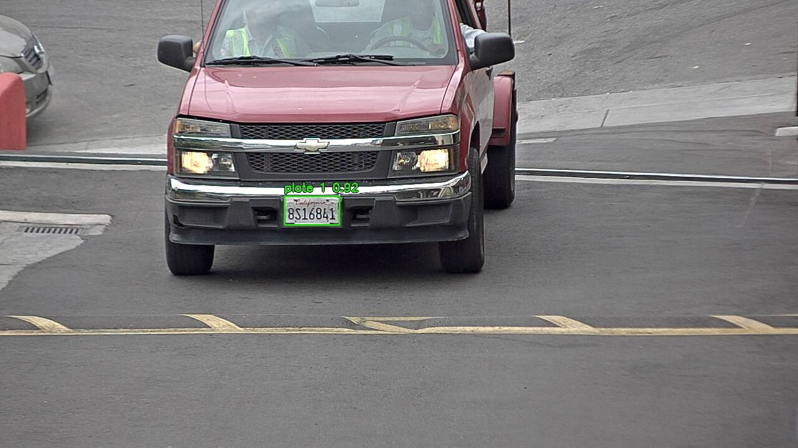
1 detections · 41.5 ms
#1 · 0.918 Reference 8S16841
Original OCR 8S16841 ✓
Fine-tuned OCR 8S16841 ✓
From scratch 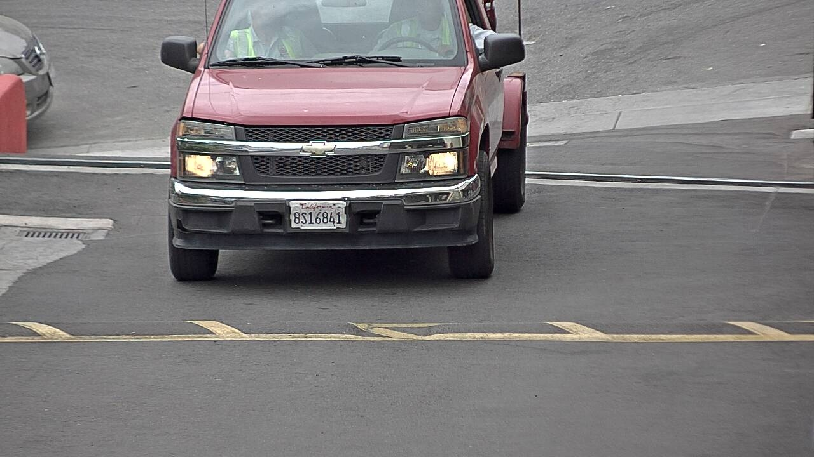
0 detections · 53.4 ms
No detections at this confidence threshold.
us_test_011.jpg Test image · Same confidence threshold for all models
Original image Reference: DCK6344
Pretrained 1 detections · 105.0 ms
#1 · 0.893 Reference DCK6344
Original OCR DCK6344 ✓
Fine-tuned OCR DCK6344 ✓
Fine-tuned 1 detections · 41.0 ms
#1 · 0.932 Reference DCK6344
Original OCR DCK6344 ✓
Fine-tuned OCR DCK6344 ✓
From scratch 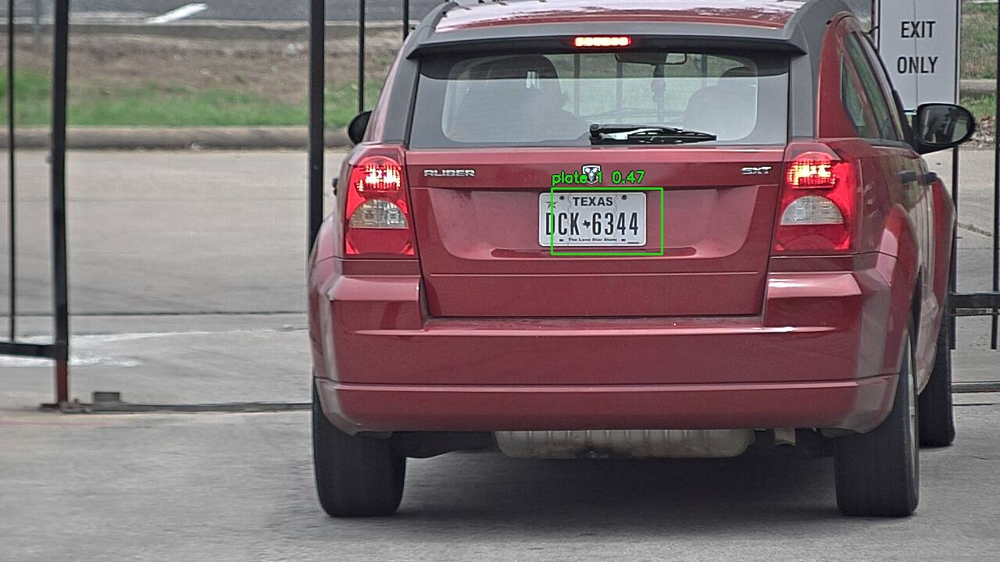
1 detections · 55.4 ms
#1 · 0.467 Reference DCK6344
Original OCR DCK6344 ✓
Fine-tuned OCR DCK6344 ✓
us_test_012.jpg Test image · Same confidence threshold for all models
Original image Reference: WATTUP
Pretrained 1 detections · 103.4 ms
#1 · 0.907 Reference WATTUP
Original OCR WATTUP ✓
Fine-tuned OCR WATTUP ✓
Fine-tuned 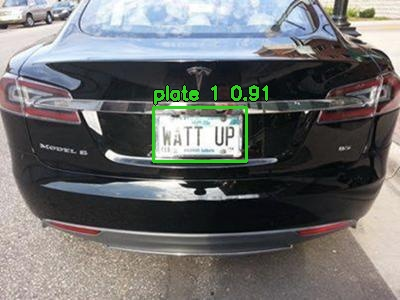
1 detections · 40.6 ms
#1 · 0.913 Reference WATTUP
Original OCR WATTUP ✓
Fine-tuned OCR WATTUP ✓
From scratch 0 detections · 52.5 ms
No detections at this confidence threshold.
us_test_013.jpg Test image · Same confidence threshold for all models
Original image Reference: AMPITUP
Pretrained 1 detections · 147.4 ms
#1 · 0.893 Reference AMPITUP
Original OCR AMPITUP ✓
Fine-tuned OCR AMPITUP ✓
Fine-tuned 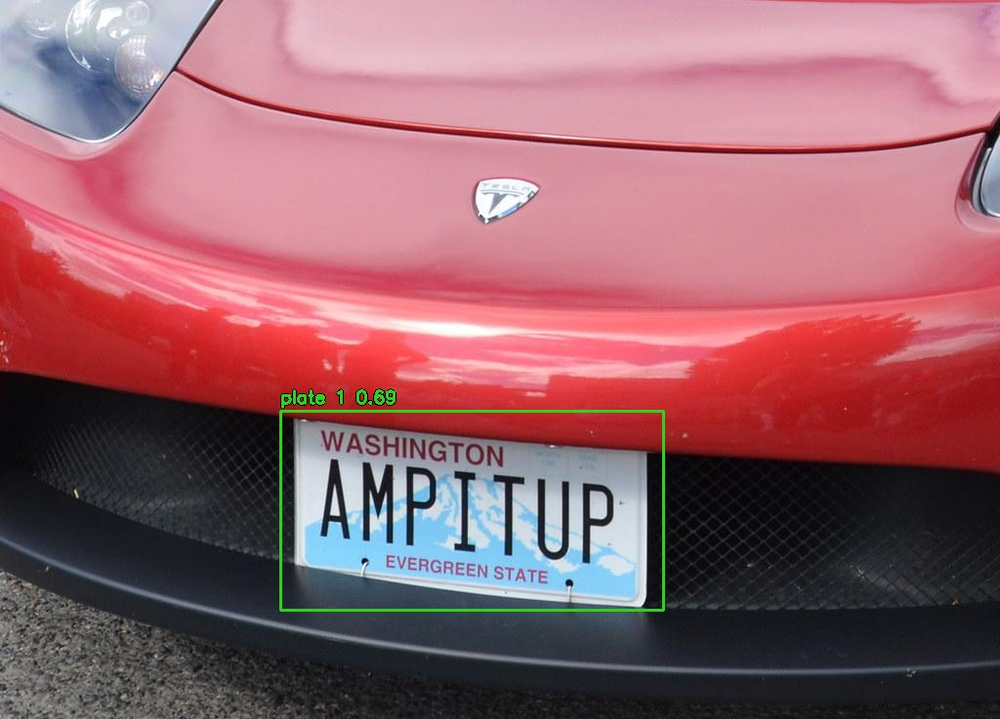
1 detections · 41.7 ms
#1 · 0.687 Reference AMPITUP
Original OCR AMPITUP ✓
Fine-tuned OCR AMPITUP ✓
From scratch 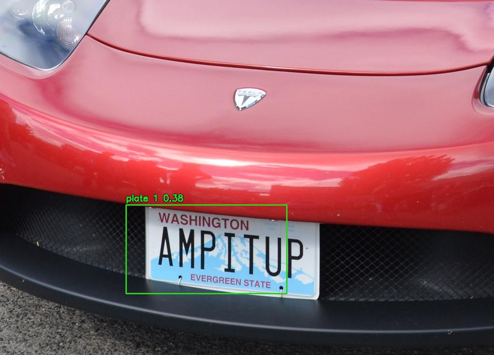
1 detections · 54.4 ms
#1 · 0.382 Reference AMPITUP
Original OCR AMPITU ✗
Fine-tuned OCR AMPITU ✗
us_test_014.jpg Test image · Same confidence threshold for all models
Original image Reference: WTC249
Pretrained 1 detections · 90.1 ms
#1 · 0.862 Reference WTC249
Original OCR WTC249 ✓
Fine-tuned OCR WTC249 ✓
Fine-tuned 1 detections · 43.6 ms
#1 · 0.890 Reference WTC249
Original OCR MTC249 ✗
Fine-tuned OCR WTC249 ✓
From scratch 0 detections · 53.9 ms
No detections at this confidence threshold.
us_test_015.jpg Test image · Same confidence threshold for all models
Original image Reference: SB3X6N
Pretrained 2 detections · 75.6 ms
#1 · 0.766 Reference No matching plate
Original OCR THEMISH
Fine-tuned OCR 7974
#2 · 0.742 Reference SB3X6N
Original OCR SB3X6N ✓
Fine-tuned OCR SB3X6N ✓
Fine-tuned 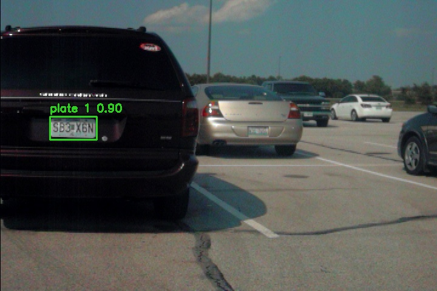
1 detections · 43.7 ms
From scratch 0 detections · 57.4 ms
No detections at this confidence threshold.
us_test_016.jpg Test image · Same confidence threshold for all models
Original image Reference: 9185914
Pretrained 1 detections · 71.6 ms
#1 · 0.891 Reference 9185914
Original OCR 9185914 ✓
Fine-tuned OCR 9185914 ✓
Fine-tuned 1 detections · 42.0 ms
#1 · 0.919 Reference 9185914
Original OCR 9185914 ✓
Fine-tuned OCR 9185914 ✓
From scratch 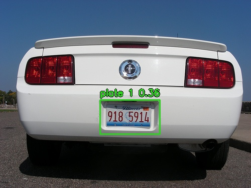
1 detections · 55.1 ms
#1 · 0.364 Reference 9185914
Original OCR 9185914 ✓
Fine-tuned OCR 9185914 ✓
us_test_017.jpg Test image · Same confidence threshold for all models
Original image Reference: UH1N2A
Pretrained 1 detections · 78.3 ms
#1 · 0.886 Reference UH1N2A
Original OCR UH1N2A ✓
Fine-tuned OCR UH1N2A ✓
Fine-tuned 1 detections · 42.5 ms
#1 · 0.899 Reference UH1N2A
Original OCR UH1N2A ✓
Fine-tuned OCR UH1N2A ✓
From scratch 0 detections · 54.3 ms
No detections at this confidence threshold.
us_test_018.jpg Test image · Same confidence threshold for all models
Original image Reference: LOLNOOB
Pretrained 1 detections · 67.9 ms
#1 · 0.894 Reference LOLNOOB
Original OCR LOLNOOB ✓
Fine-tuned OCR LOLNOOB ✓
Fine-tuned 1 detections · 50.5 ms
#1 · 0.928 Reference LOLNOOB
Original OCR LOLNOOB ✓
Fine-tuned OCR LOLNOOB ✓
From scratch 1 detections · 57.1 ms
#1 · 0.476 Reference LOLNOOB
Original OCR OLNOOB ✗
Fine-tuned OCR OLNOOB ✗
us_test_019.jpg Test image · Same confidence threshold for all models
Original image Reference: AG0R6T
Pretrained 2 detections · 73.4 ms
#1 · 0.844 Reference AG0R6T
Original OCR AGOR6T ✗
Fine-tuned OCR AGOR6T ✗
#2 · 0.488 Reference No matching plate
Original OCR FINT8L
Fine-tuned OCR FINT8L
Fine-tuned 1 detections · 51.1 ms
#1 · 0.905 Reference AG0R6T
Original OCR AGOR6T ✗
Fine-tuned OCR AGOR6T ✗
From scratch 0 detections · 56.4 ms
No detections at this confidence threshold.
us_test_020.jpg Test image · Same confidence threshold for all models
Original image Reference: Not labeled
Pretrained 2 detections · 83.2 ms
#1 · 0.884 Reference Not labeled
Original OCR INESUI
Fine-tuned OCR MESUI
#2 · 0.756 Reference No matching plate
Original OCR 08
Fine-tuned OCR 00
Fine-tuned 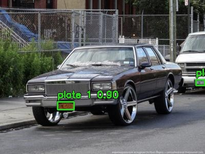
2 detections · 50.6 ms
#1 · 0.897 Reference Not labeled
Original OCR FNE501
Fine-tuned OCR FM501
#2 · 0.332 Reference No matching plate
Original OCR 00
Fine-tuned OCR 00
From scratch 0 detections · 56.8 ms
No detections at this confidence threshold.
Please enable JavaScript to browse this paginated gallery. 

 #1 · 0.916
#1 · 0.916